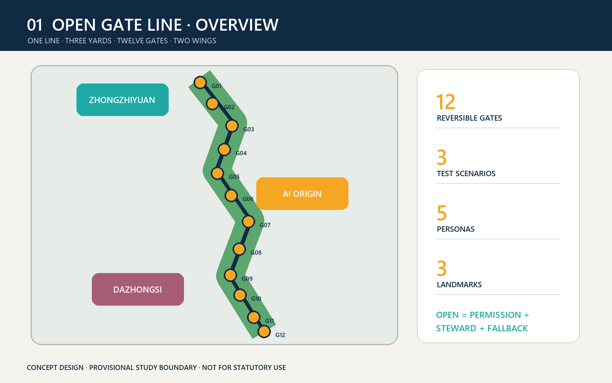
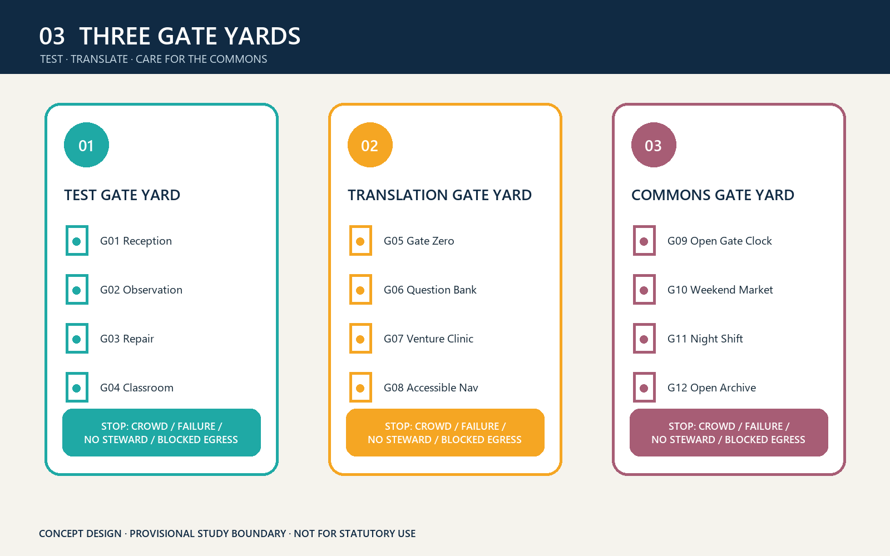
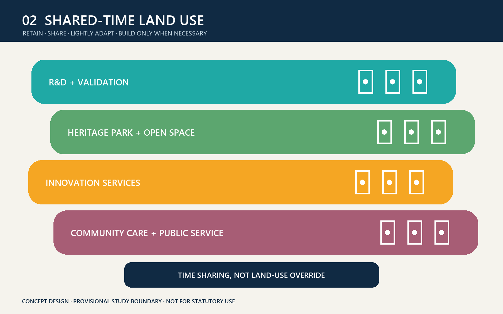
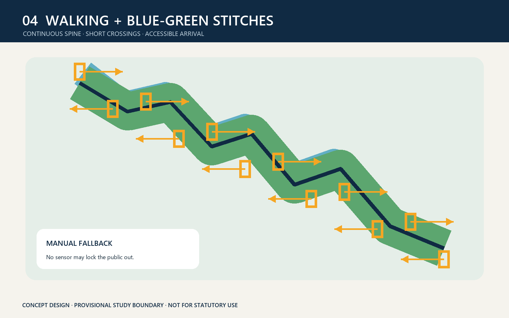
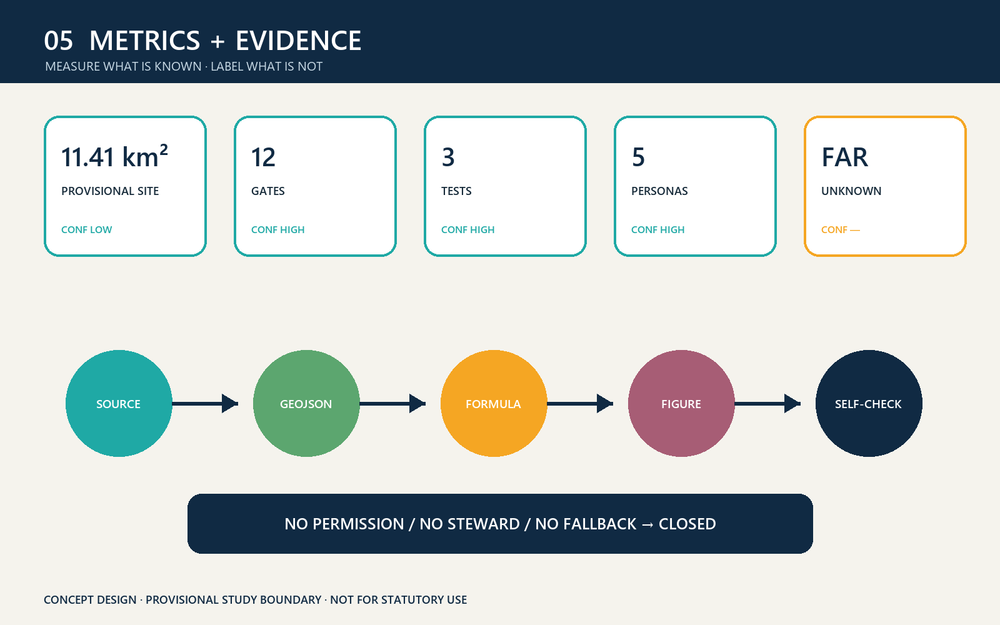

05 · BUILDINGS + RENEWAL
Retain, share, lightly adapt, build only when necessary
Use ground floors, yards, and links first. Exact intensity and demolition await official controls and professional surveys.
One line · Three yards · Twelve gates · Two wings
Open on time. Close together.
01 · OVERVIEW

02 · KEY AREAS

03 · LAND USE

04 · WALKING + BLUE-GREEN

05 · BUILDINGS + RENEWAL
Use ground floors, yards, and links first. Exact intensity and demolition await official controls and professional surveys.
06 · AI SCENARIOS
Minimize data and retain manual counting, paper lists, mechanical keys, and human guidance. Biometrics are not the default.
07 · METRICS + EVIDENCE

08 · TASKS + SELF-CHECK
Requirements, standards, geometry, metrics, assumptions, and all four review gates are recorded in the structured package.
09 · SOURCES + ASSUMPTIONS
Boundaries remain provisional. Ownership, heritage, fire, access, insurance, operations, privacy, and utilities require node-level verification.